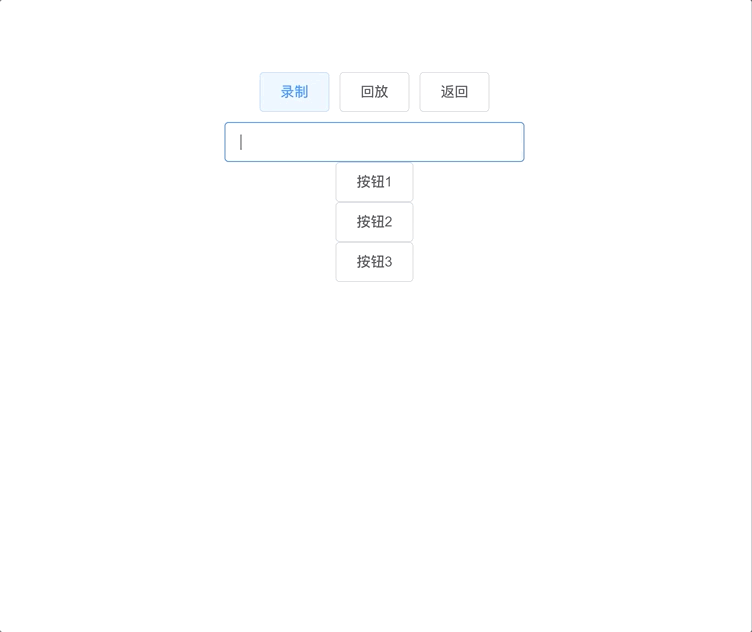
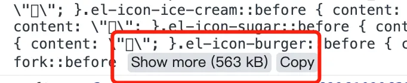

- 52 为何说 AbortController 是前端一把利剑
- 51 前端 Money 类
- 50 理解JS里的WeakMap
- 49 token无感刷新的基本实现
- 48 前端中的 File 和 Blob两个对象到底有什么不同
- 47 js 检测网页空闲状态(一定时间内无操作)
- 46 Javascirpt 时区
- 45 实用的 Javascript 小功能
- 44 前端实现直接粘贴图片到 html 页面
- 43 前端如何静悄悄录制用户的操作过程，静悄悄上传到服务器
- 42 JS 中数组的 map 鲜为人知但绝妙的使用方法
- 41 在 Web 中判断页面是不是刷新
- 40 Js 小技巧
- 39 split 方法我算是白学了
- 38 拼接 URL
- 37 ES14 中 5 个最具变革性的 JavaScript 特性
- 36 JavaScript 中设置器和获取器
- 35 非常强大的标准 JavaScript API - AbortController
- 34 掌握 JavaScript 中的 Call 和 Apply
- 33 一文整懂事件对象 event 的常用方法
- 32 7 种开发人员都应该知道的高级 JavaScript 技术
- 31 实现基于用户操作系统偏好的明暗主题切换
- 30 JavaScript 原生实现图片复制与粘贴
- 29 高精度实现定时器
- 28 获取上传进度的几种方式
- 27 聊聊禁止页面滚动的几种方法
- 26 缓存 http 错误，避免多次报错提示
- 25 文件操作
- 24 数据类型判断方法
- 23 宏任务和微任务
- 22 十个超级好用的 Js 技巧
- 21 前端的网络状态
- 20 使用 JavaScript 加载字体
- 19 你需要知道的 Symbols
- 18 Set 和 WeakSet 的用法和区别
- 17 sessionStorage 能在多个标签页之间共享数据吗
- 16 scrollIntoview
- 15 reduce 的高级用法
- 14 js 小众且好用的技巧
- 13 js 如何监听一个变量改变
- 12 javascript 奇葩行为大赏
- 11 FileReader
- 10 EventSource
- 09 document.referrer 拦截问题
- 08 7 个 Promise 静态方法
- 07 谈谈前端路由的实现原理 hash ＆ history
- 06 属性的 getter 和 setter
- 05 高效检查 JS 对象中的键是否存在
- 04 实现鼠标滚轮缩放 SVG 内容
- 03 使用 JS 向现有 SVG 中添加元素
- 02 JS 单行代码集
- 01 7 种位运算符的神奇用法
前端如何静悄悄录制用户的操作过程，静悄悄上传到服务器
HaoTian · 2024-11-09 12:25:42
这几天上面交代下来了，需要对这些项目做一些用户行为的记录，主要是为了更好地还原用户在某一个时间点的操作过程

注意点
想要完成这个需求，仔细想了一下，需要注意几个点：
- **跨框架使用：**这些项目有 vue、angular、react，需要都能适用
- **能录制用户行为：**能把用户在页面上的操作录制下来
- **能回放录制：**如果不能回放，那么这个录制就无意义了
- **用户无感知：**必须做到用户无感知才行
思考 & 技术方案
说到前端视频的录制，我们会想到 webRTC 这个技术，他能做到录制屏幕的效果，但是通过 webRTC 去完成这个方案的话，有几个缺点：
- 做不到用户无感知，需要用户同意才能录制
- 录制的视频太大了，太占内存了
- 学习成本比较高，这也是原因之一
那怎么才能做到：
- 用户无感知
- 不录制视频
其实只要不录制视频了，那么用户肯定就无感知，因为一旦要录视频，浏览器肯定要询问用户同意不同意。
所以我们选择了另一个方案 rrweb，一个用来录制用户页面行为的库~
rrweb
rrweb 是 record and replay the web 的简写，旨在利用现代浏览器所提供的强大 API 录制并回放任意 web 界面中的用户操作。
效果展示
基本使用
我们先定义好 html 结构，三个按钮
- 录制：点击开始录制
- 回放：点击开始回放
- 返回：点击重新再来
还有一个 replayer ，用来当做回放的容器
<template>
<div class="main">
<div>
<el-button @click="record">录制</el-button>
<el-button @click="replay">回放</el-button>
<el-button @click="reset">返回</el-button>
</div>
<div v-if="!showReplay">
<div>
<el-input style="width: 300px" v-model="value" />
</div>
<div>
<el-button>按钮1</el-button>
</div>
<div>
<el-button>按钮2</el-button>
</div>
<div>
<el-button>按钮3</el-button>
</div>
</div>
<div ref="replayer"></div>
</div>
</template>
我们需要先安装两个包：npm i rrweb rrwebPlayer
- **rrweb：**用来录制网页的
- **rrwebPlayer：**用来回放的
rrweb拥有一个 record 函数来进行录制操作，并可传入配置，emit属性就是用户操作的监听函数，接收一个参数event，这个参数是什么，我们后面会说~
然后我们定义三个函数：
- record：录制函数
- replay：回放函数
- reset：返回/重置函数
const rrweb = require("rrweb");
import rrwebPlayer from "rrweb-player";
const events = ref([]);
const stopFn = ref(null);
const showReplay = ref(false);
const replayer = ref(null);
const record = () => {
console.log("开始录制");
stopFn.value = rrweb.record({
emit: (event) => {
events.value.push(event);
},
// 支持录制canvas
recordCanvas: true,
collectFonts: true,
});
};
const replay = () => {
stopFn.value();
showReplay.value = true;
new rrwebPlayer({
// 可以自定义 DOM 元素
target: replayer.value,
// 配置项
props: {
// 传入events
events: events.value,
},
});
};
const reset = () => {
showReplay.value = false;
events.value = [];
};
录的是视频吗？
我们之前说了：一旦要录视频，浏览器肯定要询问用户同意不同意。但是我们发现我们使用 rrweb 去录制，浏览器并没有询问，做到了无感知~所以我们可以推断出，rrweb 录制的并不是视频，那录制的是什么呢？
我们其实可以试着去输出一下刚刚的参数 event 看看是什么
rrweb.record({
emit: (event) => {
// 输出
console.log(event);
events.value.push(event);
},
});
我们可以看到这个event记录的东西是当前页面的DOM结构，当用户操作页面时，rrweb会将每一次的 DOM 结构转换成对象形式，通过 emit 函数的第一个参数输出，我们使用一个数组去记录这一次次的 DOM 结构，然后把它传给rrweb-player，它能将这些 DOM 结构按照先后顺序，一个一个展示出来，自然就相当于是视频的展示效果了~
rrweb能记录这些页面的 DOM 行为：
- 节点创建、销毁
- 节点属性变化
- 文本变化
- 鼠标移动
- 鼠标交互
- 页面或元素滚动
- 视窗大小改变
- 输入
上传 & 优化
我们记录的这些数据，需要上传到后端那边去，方便后续在后台管理系统里管理这些回放~
很多人会说这样一直录制，那岂不是数据量很大？所以我觉得只有在一些重要的页面，才需要做录制行为的操作，而不是每一个页面都去做这样的操作~
并且每次上传需要一定的时间间隔，不能上传太频繁，不然浏览器压力会增大~
const record = () => {
console.log("开始录制");
stopFn.value = rrweb.record({
emit: (event) => {
events.value.push(event);
},
recordCanvas: true,
collectFonts: true,
});
};
const report = async () => {
await reportRequest(events.value);
events.value = [];
};
// 20s 去上传一次
setInterval(report, 10 * 2000);
同时，虽然现在上传的是 DOM 结构的对象，大小远远比视频小，但是其实还是不小的
所以我们需要采取措施，去压缩一下数据，压缩后再进行上传，这样能降低服务器的压力~我们可以使用packFn属性来对录制的数据进行压缩，同时回放时也要用unpackFn去解码
const record = () => {
console.log("开始录制");
stopFn.value = rrweb.record({
emit: (event) => {
events.value.push(event);
},
recordCanvas: true,
collectFonts: true,
+ packFn: rrweb.pack
});
};
const replay = () => {
stopFn.value();
showReplay.value = true;
new rrwebPlayer({
// 可以自定义 DOM 元素
target: replayer.value,
// 配置项
props: {
// 传入events
events: events.value,
+ unpackFn: rrweb.unpack,
},
});
};